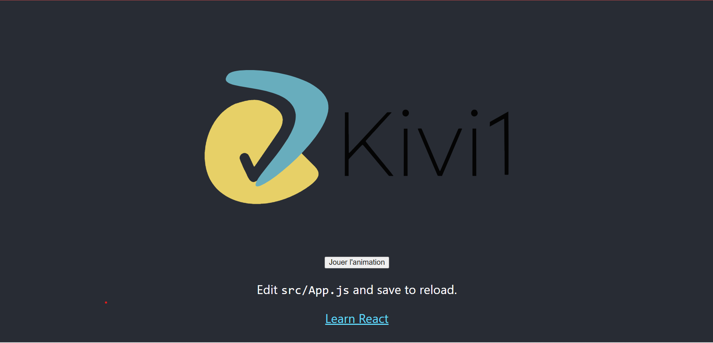

Bonjour, je m'appelle Baptiste Tifé,
j'ai 18 ans et je suis actuellement en 1ère année de Bts SIO Slam
à l'école Ipssi de Marne la vallée.
Dans ce Portfolio vous pourrez retrouver :
mes compétences en code, mes éxperiences proffessionnel, toutes les
formations que j'ai faites,
les projets que j'ai réaliser durant mon année de Bts ainsi
que pendant mon stage en entreprise de fin d'année.
Ainsi que ce qu'il faut savoir pour mes informations
Html 5 :
Css 3 :
MySQL :
Php 7 :
Javascript :
React :
WordPress :
Anglais :
Je viens d'effectuer un stage de 6 semaines en entreprise en tant que developpeur web,
il m'a permis de m'améliorer dans le développement web car j'ai du apprendre a faire de l'animation en java.
J'ai travailler 2 semaines pour la mairie de Tournan-en-brie pendant l'été, durant ces 2 semaines j'ai effectuer plusieurs taches comme :
du desherbage, de la peinture ou encore nettoyer les rues.
J'ai fait mon stage de 3eme dans l'entreprise Fujifilm, durant cette semaine de stage j'ai decouvert differents métiers qu'il y a en entreprise.
J'ai passer mon Baccalauréat STI2D Option SIN en 2021, ce qui ma permis de connaitre les bases de l'informatique.
Je suis actuellement en 1ère année de Bts SIO Slam a l'école Ipssi de Marne la Vallèe

React : Chapitre 13, Create React App
Animation d'un Logo :
